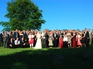
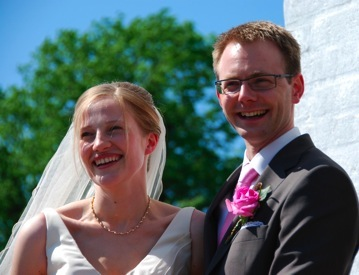

Tale




Hvor er det dog en fantastisk dag! Naturen folder sig ud, solen skinner, venner og familie hvorhen man ser og ovenikøbet får man lov til at gifte sig med den kæreste man har. Det kan jeg kun anbefale! :) Og det vil jeg gerne takke for!
Vejret er det selvfølgelige lidt svært at takke nogen for, men hvis der er noget om den globale opvarmning - så har den tilsyneladende også positive effekter ;)
Venner, eller måske mere hensigtsmæssigt - Friends! You have come from near and far and I'm asstonished how many of you have showed up. You have been invited today, because you have contributed to our lives in a way that we are gratefull for. You have said, done or inspired us to things, we wouldn't have experienced without you. You have a part in the way, we have turned out - and I'm actually pretty pleased about how we have turned out :) Thank you so much for that and for sharing this day with us. I'm simply greatfull!
Familien, jamen her er der jo nu også officelt to sider som skal takkes for hver deres.
Kære Mariane og Bent. Som det første vil jeg selvfølgelige takke jer for den svipser I lavede i 1972 og som så førte til Lenes undfagelse i Marts 1973. Uden den, ville jeg ikke stå her i dag, ja uden den, ville ingen af os være her i dag!
Men det jeg vil allermest takke jer for, er den måde I har taget imod mig i alle de år jeg nu har kendt Lene. Jeg er blevet inviteret til familiefester fra brylluper til fødselsdage, julefrokoster, påskefrokoster fra dag et. I har fra starten hilst mig velkommen i familien og fodret mig på bedste fynske vis med morgen mad og morgen kaffe og formiddags kaffe og middags mad og middags kaffe og eftermiddags kaffe og så videre - gerne med en af Bents hjemmelavet snaps så man bliver så dejlig søvnig og ikke kan klare sig uden en god morfar på sofaen.
Og da så endelig familien kom, og I godt kunne se at ham slipper vi ikke så let af med, da fortsatte I med at hjælpe hele familien med at passe børn til alt fra sygedage, rejsedage og sågar polterabend. Tusind tak for det også.
Men det der er endnu større er jo at I i dag har givet mig jeres mest værdifulde gave I har - jeres datter. Jeg har selv fået en noget bedre forståelse for hvad det må betyde efter jeg selv har fået to dejlige døtre, og jeg har besluttet mig for, at de skal gå i kloster så jeg aldrig selv skal tage stilling til hvem de skal "gives" til. Men I gør det, og det er nok den største tillidserklæring man kan få - det er jeg uendelig taknemmelig for. Tusind tak for Lene - jeg vil gøre mit bedste for at passe på hende.
og så den anden del af familien (nu på tysk):
Liebe Mami, lieber Vati. Obwohl ich auch euch dafür Danken könnte, dass ihr mich 1972 produziertet und eine deutliche Verbesserung zu eurem protoypen von 1969 vor den Tag legen konntet, möchte ich mich heute jedoch auf die Art konzentrieren, auf die Ihr Lene willkommen geheissen habt. Wie ist man doch aufgeregt, wenn man das erste mal seine freundin den Eltern vorstellt. Ist sie "gut genug"? Ist sie gross genug, alt genug, hübsch genug, humorvoll genug, klug genug, süss genug, usw. Man hat angst davor ob sie nun den hohen Erwartungen der Eltern entspricht - hoffend dass die Eltern sich nicht einer schämen. Dieses gefühl der scham habt ihr mir nie gegeben, sondern das gegenteil: ich hab mich immer Stoltz gefühl Lene nach Hjerpsted mit zu nehmen. Ich finde es sehr wichtig, dass man ein gutes Verhältnis zwischen der familie von der man kommt und der familie die man stiftet hat, und das habt Ihr immer zur besten Note unterstützt. Dafür den grössten Dank.
Og nu til dig min kære Lene - nej, min kære hustru!
Jeg har tænkt længe på hvad det er jeg vil sige til dig, og det har ikke været let. Men jeg tror det er meget sundt at have en anledning til at reflektere lidt over det der er sket og prøve at sætte ord på det.
Vi har nu kendt hinanden i over 11 år - 11 år! og vi har oplevet rigtig meget. Fra fester til bananasplit, fra familiebesøg til Interrail tourer, fra Baltikum til Øst-europa, fra Danmark til USA, fra studie til erhvervsliv, fra par til familie, fra ulovlig-lejebolig til husejer - og nu endda fra par-forhold til ægteskab!
Men hvad med vores kærlighed? Hvordan beskriver man lige dens karakter? Dens udvikling? Dens tilstedeværele?
Det har jeg faktisk tænkt en del over, og jeg er kommet frem til, at vores kærlighed faktisk kan beskrives meget simpelt som NATURLIGT
-
•Vores kærlighed er naturlig, fordi den er en naturlig del af vores liv, af dagligdagen, af de timer vi er sammen.
-
•Vores kærlighed er naturlig, fordi den virker som om den altid har været der. Den virker ikke kunstig eller menneskeskabt, men lige som naturen, som noget altid nærværende der leder vores handlinger og holder os sammen.
-
•Vores kærlighed er naturlig, fordi den er oplagt - kig på os, vi passer sku da bare godt sammen!
-
•Vores kærlighed er naturlig, fordi den er enkel - den er ukompliceret, ingen pauser, ingen jalousi, ingen ubalance.
-
•Vores kærlighed er naturlig, fordi den er jævn - der har ikke de store udslag, men den er der konstant.
-
•Vores kærlighed er naturlig, fordi man nogen gange først lægger mærke til den, når man ikke har den tæt på, som fx for et par uger siden, hvor du og pigerne var på fyn og jeg sad alene derhjemme. Sjældent har jeg følt mig mere ensom. Sjældent har jeg savnet noget så meget som at have jer omkring mig. Jeg havde faktisk set frem til en aften til mig selv, men det viste sig ikke at være det, min sjæl ønskede - den ville være nær dig, den ville være nær familien. Det føltes UNATURLIGT.
-
•Vores kærlighed er naturlig, fordi den er ægte - den er så ægte, at jeg i dag er blevet en ægte-mand - DIN ægtemand.
Så naturlig en del er du blevet af mit liv, at jeg ikke kan undvære dig - og det er jeg glad for.
Lene, jeg elsker dig af hele mit hjerte.
-
•Jeg elsker den ro og balance du giver mig.
-
•Jeg elsker det kys jeg får af dig hver morgen inden jeg tager på arbejde.
-
•Jeg elsker at ligge hos dig i sofaen når du nusser mit hår.
-
•Jeg elsker dit hmrhrm når du koncentrerer dig eller er nervøs.
-
•Jeg elsker dit rejehop du laver, når du skal skynde dig over gaden.
-
•Jeg elsker at jeg kan fortælle dig hvad der ligger på mit sind - uden at jeg bliver dømt på det.
-
•Jeg elsker det grin du har, når du har været bisset, som fx 1. april, da du fortalte mig at FerieCentret havde ringet og fundet skimmelsvamp i lokalet her og derfor ville flytte hele festen i et telt.
-
•Jeg elsker det kys du giver mig inden vi falder i søvn.
-
•Jeg elsker at du åbner bananer i den forkerte ende.
-
•Jeg elsker at du kan give mig nye perspektiver på ting jeg synes er lysende klare.
Jeg vil gerne takke dig for den kærlighed du giver mig gennem hele dagen - helt naturligt! Og tak for dit JA i dag!
Vi startede vores invitation med et "Lykken har smilet til os" - og det er meget sigende, men jeg vil gerne afslutte med en korrektion på denne sætning, for jeg føler at lykke ikke kun HAR, men også fortsat smiler til os. Tusind tak for at være med til det! KNUS!
Dirks tale: